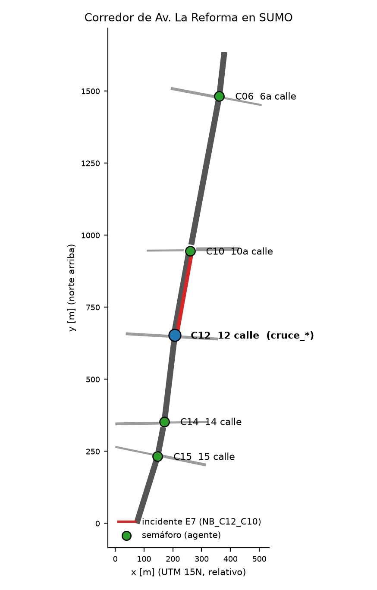
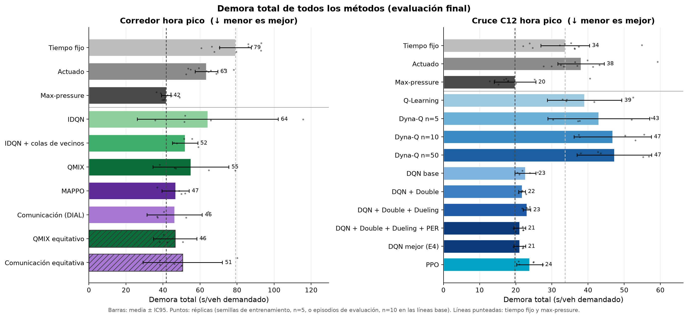
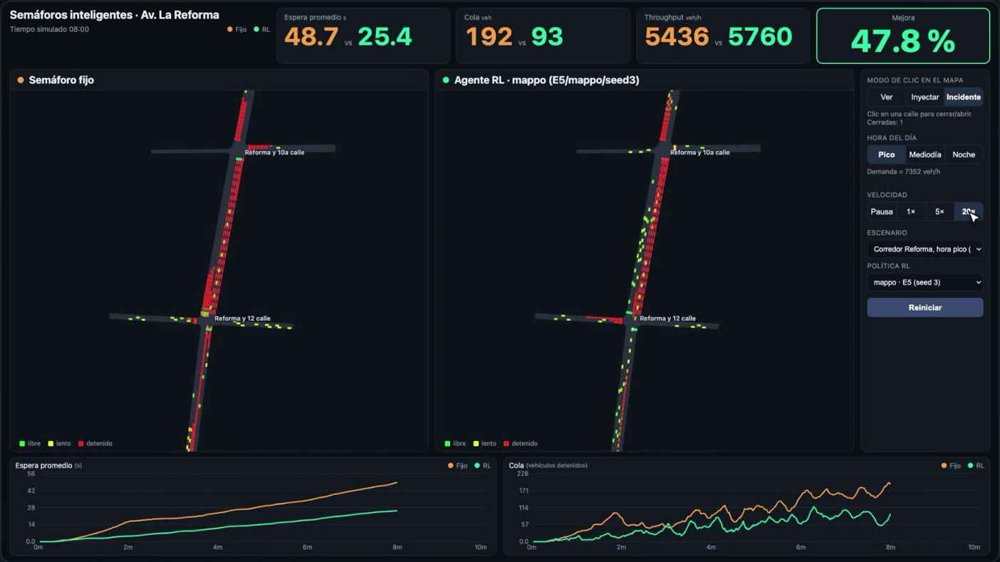

CC3104 APRENDIZAJE POR REFUERZO · UVG · 2026
Semáforos inteligentes
en Av. La Reforma
Aprendizaje por refuerzo multiagente en un corredor real de 5 cruces
Integrantes: <completar>
Semáforos inteligentes en Av. La Reforma · CC3104 · UVG 2026
2
El problema: semáforos que no ven la demanda
Los semáforos de tiempo fijo reparten el verde sin saber cuántos vehículos esperan en cada aproximación.
<dato: cifra de congestión en Ciudad de Guatemala con fuente verificable>
1.65 km
corredor en zonas 9 y 10
5
semáforos consecutivos
123–547 m
entre cruces: coordinación difícil
Semáforos inteligentes en Av. La Reforma · CC3104 · UVG 2026
3
Pregunta de investigación
¿Cuánto reduce el RL multiagente el tiempo de espera en un corredor real de Guatemala frente al control actual, y se mantiene esa mejora ante condiciones que no vio en el entrenamiento?
Frente a tiempo fijo y actuado
Frente a max-pressure
Hora no vista · +30 % · incidente
Semáforos inteligentes en Av. La Reforma · CC3104 · UVG 2026
4
Escenario: corredor real de 5 cruces en SUMO

Red construida con geometría de OpenStreetMap
Sur a norte: 15, 14, 12, 10a y 6a calle; 3 carriles por sentido; transversales de una vía.
Cruce C12 (12 calle) para un agente
El más cargado; en rojo, el tramo del incidente de E7.
Datos sintéticos y provisionales
Conteos (7352 veh/h en el corredor en hora pico) y ciclo fijo de 110 s generados por script, no medidos en campo.
Semáforos inteligentes en Av. La Reforma · CC3104 · UVG 2026
5
Formulación: MDP por cruce, Dec-POMDP en el corredor
Estado
Fase actual, verde mínimo cumplido, densidad y cola por carril (24 valores en C12).
Acción
Siguiente fase verde cada 5 s; el entorno impone amarillo de 3 s y verde mínimo de 10 s.
Recompensa
Reducción de la espera acumulada, incluida la de vehículos que esperan para entrar. γ = 0.99.
Dec-POMDP
5 agentes con observación local y recompensa de equipo; estado global solo al entrenar (CTDE).
Episodio: 3600 s simulados = 720 decisiones por agente.
Semáforos inteligentes en Av. La Reforma · CC3104 · UVG 2026
6
Métodos: de reglas clásicas a RL multiagente
Líneas base
sin aprendizaje
Tiempo fijo (Webster, 110 s)
Actuado
Max-pressure
Un agente
cruce C12
Q-Learning
Dyna-Q (n = 5, 10, 50)
DQN + Double + Dueling + PER
PPO
Multiagente
corredor de 5 cruces
IDQN (+ colas de vecinos)
QMIX
MAPPO
Comunicación (DIAL)
Más complejidad hacia la derecha · 3 líneas base y 16 configuraciones de RL con el mismo protocolo.
Semáforos inteligentes en Av. La Reforma · CC3104 · UVG 2026
7
Hallazgo clave: el agente aprendía a bloquear una entrada
Con la recompensa estándar de sumo-rl, los autos que no caben en el carril esperan fuera de la red sin costo.
| Tiempo fijo | DQN original | DQN corregido | |
| Espera media | 29.2 s | 14.9 s | 19.7 s |
| No entró (backlog) | 0.21 % | 4.92 % | 0.46 % |
| Demora total | 31.6 s | 97.1 s | 34.4 s |
Cruce C12, 40 episodios de entrenamiento, 3 semillas de evaluación (corridas de sanidad).
Corrección
La recompensa suma la espera de los pendientes de entrar
Métrica principal: demora total por vehículo demandado
La espera media premiaba el atajo; la demora total lo castiga.
Semáforos inteligentes en Av. La Reforma · CC3104 · UVG 2026
8
Protocolo: mismo presupuesto, semillas separadas
1
Entrenar
5 semillas × 200 episodios = 144 000 decisiones por agente
2
Validar
Checkpoint cada 20 episodios; se elige el mejor con semillas 2000 y 2001
3
Evaluar
10 episodios nunca vistos (semillas 1000 a 1009)
4
Comparar
Media ± IC95; t de Welch con corrección de Holm
Métrica principal: demora total (s/veh demandado)
Espera en la red + retraso de inserción + espera afuera de quienes nunca entraron.
Semáforos inteligentes en Av. La Reforma · CC3104 · UVG 2026
9
E1 · Max-pressure es una línea base muy fuerte
Corredor, hora pico · demora total (s/veh)
Media ± IC95 entre 10 episodios de evaluación.
−47 %
max-pressure frente al fijo en el corredor (41.7 vs 79.1 s)
−41 %
en el cruce C12 (19.8 vs 33.6 s)
12.7–15.7 %
de la demanda no entra con +30 % de demanda
Semáforos inteligentes en Av. La Reforma · CC3104 · UVG 2026
10
E2–E4 · Un cruce: DQN y PPO cerca de max-pressure
Cruce C12, hora pico · demora total (s/veh)
DQN completo = Double + Dueling + PER. Media de 5 semillas (líneas base: 10 episodios).
E2 · Planificar no ayudó
Dyna-Q n=50: +8.2 s frente a Q-Learning (p = 0.16); ningún tabular alcanza al fijo.
E3 · Variantes de DQN en el ruido
Completo frente a base: −1.6 s (p = 0.23).
E4 · DQN ≈ PPO
PPO +2.8 s (p = 0.10); ambos sin diferencia detectable con max-pressure.
Semáforos inteligentes en Av. La Reforma · CC3104 · UVG 2026
11
E5–E6 · MAPPO mejora al fijo, no a max-pressure
Corredor, hora pico · demora total (s/veh)
Media ± IC95 entre 5 semillas de entrenamiento (líneas base: 10 episodios).
−41 %
MAPPO frente al tiempo fijo (p Holm < 0.001)
+5.1 s frente a max-pressure
p = 0.13: sin diferencia detectable
Sin ola verde
Comunicación: 4.1 paradas/veh; líneas base: 2.7–3.9
Semáforos inteligentes en Av. La Reforma · CC3104 · UVG 2026
12
E7 · La ventaja se pierde con +30 % de demanda
| Corredor · s/veh | Pico | Mediodía | +30 % | Incidente |
| Tiempo fijo | 79.1 | 30.4 | 345.7 | 198.4 |
| Actuado | 63.4 | 18.7 | 320.4 | 180.5 |
| Max-pressure | 41.7 | 21.1 | 252.2 | 161.8 |
| MAPPO | 36.8 | 17.2 | 373.3 | 165.5 |
| Comunicación | 36.8 | 20.7 | 281.8 | 175.2 |
Demora total media de 10 episodios. Agentes: una semilla por familia, elegida por validación (favorece a los agentes).
+48 %
MAPPO frente a max-pressure con +30 % de demanda (y +8 % frente al fijo)
×10.1 vs ×6.0
Degradación de la demora de pico a +30 %: MAPPO frente a max-pressure
Semáforos inteligentes en Av. La Reforma · CC3104 · UVG 2026
13
E8 · En el cruce, menos demora cuesta equidad
Cruce C12 · espera máxima en la 12 calle (s)
Media de 5 semillas (líneas base: 10 episodios). +48 % a +140 % frente al fijo.
En el corredor, sin ese costo
Espera máxima en transversales: MAPPO 314 s, max-pressure 420 s, tiempo fijo 524 s.
CO₂ frente al tiempo fijo
Actuado −11.3 %, max-pressure −9.6 %; agentes aprendidos entre −8.4 % y +2.7 %.
Semáforos inteligentes en Av. La Reforma · CC3104 · UVG 2026
14
Resumen: el RL vence al fijo, no a max-pressure

Semáforos inteligentes en Av. La Reforma · CC3104 · UVG 2026
15
Demo en vivo: tiempo fijo contra MAPPO

Captura del video de respaldo: incidente en Reforma entre la 12 y la 10a calle.
Dos simulaciones SUMO sincronizadas: misma demanda y semilla
En vivo: inyectar autos, cambiar la hora, cerrar carriles
«Mejora» = espera en vivo, no la demora total evaluada
Plan B: video de 3:46
Semáforos inteligentes en Av. La Reforma · CC3104 · UVG 2026
16
Ética y limitaciones
Lo que el modelo no ve
Peatones: fases mínimas como restricción dura
Emergencias: prioridad por encima del agente
Buses y motos: la recompensa cuenta vehículos, no personas
Limitaciones
Conteos y ciclo fijo sintéticos
5 semillas: poco poder estadístico
Detectores perfectos en simulación; brecha con la calle
¿Quién gana y quién pierde?
En el cruce gana quien va por Reforma; la espera máxima en la transversal sube hasta 140 % frente al fijo.
Semáforos inteligentes en Av. La Reforma · CC3104 · UVG 2026
17
Conclusiones y trabajo futuro
1
Sí mejora frente al control actual
−41 % (MAPPO, corredor) y −37 % (DQN, cruce)
2
No supera a max-pressure
Ninguna diferencia a favor del RL
3
Se degrada fuera de lo entrenado
Con +30 % de demanda, MAPPO queda peor que el fijo
4
Medir bien cambia la conclusión
Demora total en lugar de espera media
Trabajo futuro
Conteos reales en video y ciclos cronometrados
Peatones, buses y motos
Más semillas y demanda variable
Max-pressure como respaldo (aprendizaje residual)
Semáforos inteligentes en Av. La Reforma · CC3104 · UVG 2026
18
Declaración del uso de IA
Claude Code (Anthropic)
Plan del proyecto y contratos entre módulos
Código, pruebas y análisis, con agentes en ramas paralelas
Borradores del informe y de esta presentación
Responsabilidad
El equipo revisó el código y los números, y responde por ellos.
<completar: qué se verificó a mano>
Plan
Ramas en paralelo
Pruebas automáticas
Revisión humana
¿Preguntas?
github.com/Alexistodj124/ProyectoFinalAR
CC3104 Aprendizaje por Refuerzo · UVG · 2026